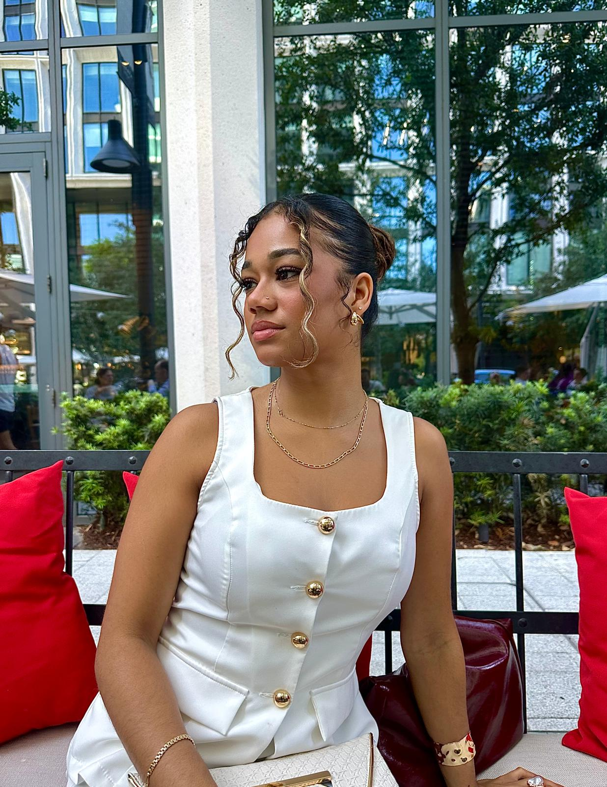

Contact
- Phone: (813) 360-9453
- Email: kmhay@usf.edu
- GitHub: github.com/kyanahay
- LinkedIn: linkedin.com/in/kyanahay

Career Vision
I am building a career that blends analytical precision with creative passion. My primary focus is becoming a high-performing Data Analyst in a fully remote, well-paid role, where I can use data to solve complex problems, uncover insights, and drive impactful decision-making.
At the same time, I am a skilled Nail Technician, which is my creative outlet and passion. My long-term goal is to grow my nail business into a luxury spa in Trinidad & Tobago.